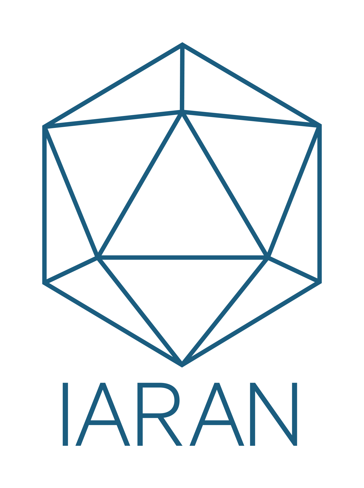

A visual interface to understand the Theory of Change system at a glance: strategic goals, objectives, official results, and the level 4 and 5 activities extracted from the results maps. Click any node to see its full information.
